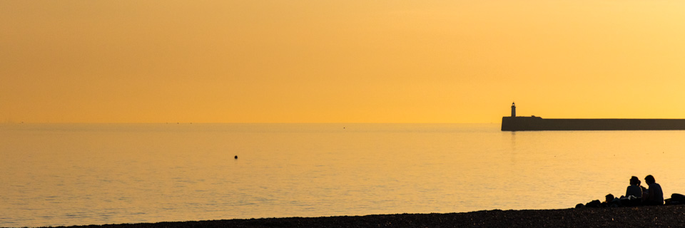

Background photo: A non-stop Hokuriku Shinkansen E7 train approaching Karuizawa station en-route to Tokyo. [24mm, f/11, 1/640s: Canon 7D Mark II with the 24-70mm f/4 IS L]
About me
I am a computer science researcher by profession. Find out more about my work and publications on my profile website.
Photography has been one of my hobbies for many years. I have always taken interest in my father’s Nikon 35mm SLR film camera since my childhood, although mainly from the perspective of how it works. In my late teens, my parents presented me with a fixed focus compact film camera. Although basic, it got me interested in taking photos. Shortly after I moved to the UK, I switched to digital because of the complexities and costs of developing film. My interest in both photography (as well as videography) and cameras spiked a great deal after I moved to Japan, which offers an abundance of interesting subjects from the details of city life to exquisite natural beauties; and there is never a shortage of the cutting edge of digital photography equipment.
Photography

Every moment is unique! In my constant tussle with time, I attempt to capture moments from the extraordinary to the most mundane of things that I see around me. My favourite subjects include, but not limited to:
Some things are better captured as videos than photographs, e.g., some cultural events, or a short travel; or something more unnoticed such as, autumn leaves swept up in the wind, or the flowing water in a mountain stream.
Generally, I post videos of life in Japan on my YouTube channel. There is some focus on trains, and the high-speed train in particular, which is one of my favourite subjects. In my videos, I try to portray life with some attention to details without providing any voice-over commentary so that the viewer is encouraged to hear incidental sounds and feel the atmosphere. I also have some videos relating to my travels outside Japan.
Other artwork
Apart from photography and videography, I draw too, when I get the time. Primarily, these are sketches on paper and sometimes on the iPad. I also help develop websites and design brochures for people and organisations.
Get in touch
I publicise my photographs and videos through a number of channels, such as instagram, Facebook, stock photography websites and so on. Here is a list with links to a number of such channels for my work. Further to that, you can find the links to my Facebook photography page and my instagram profile at the end of this page.
If you are interested in my work, and would like me to work with you on any specific project, please contact me by email (anirban.basu !at! xtremebytes {dot} com).